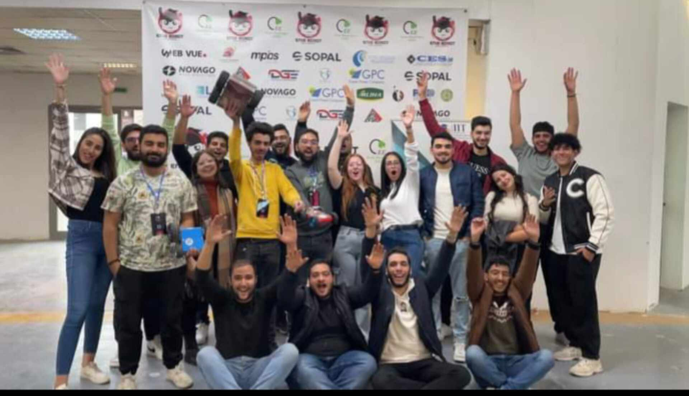
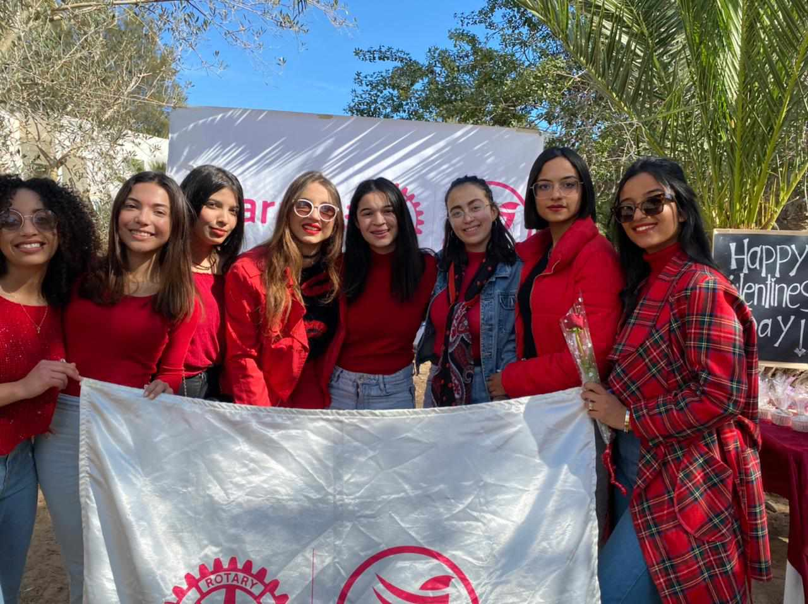
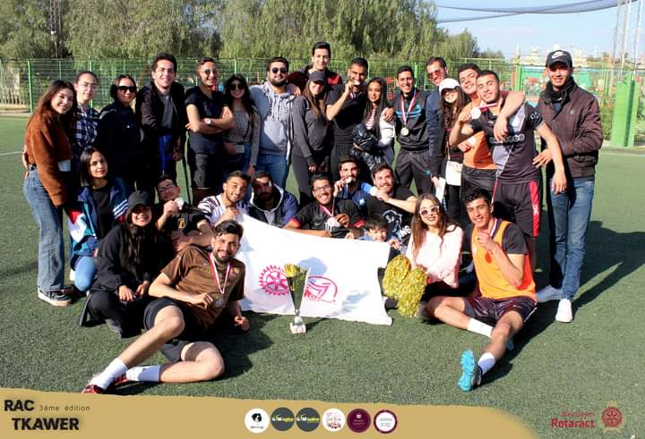
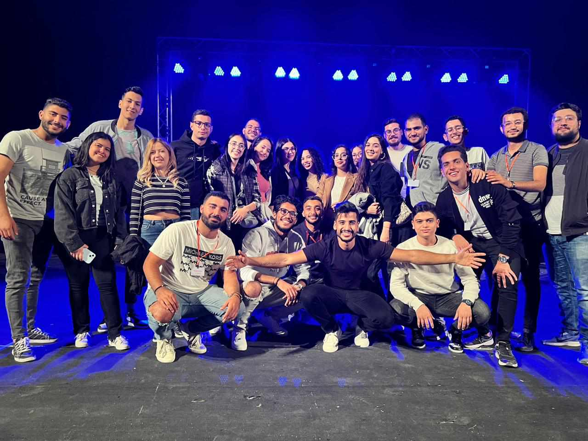
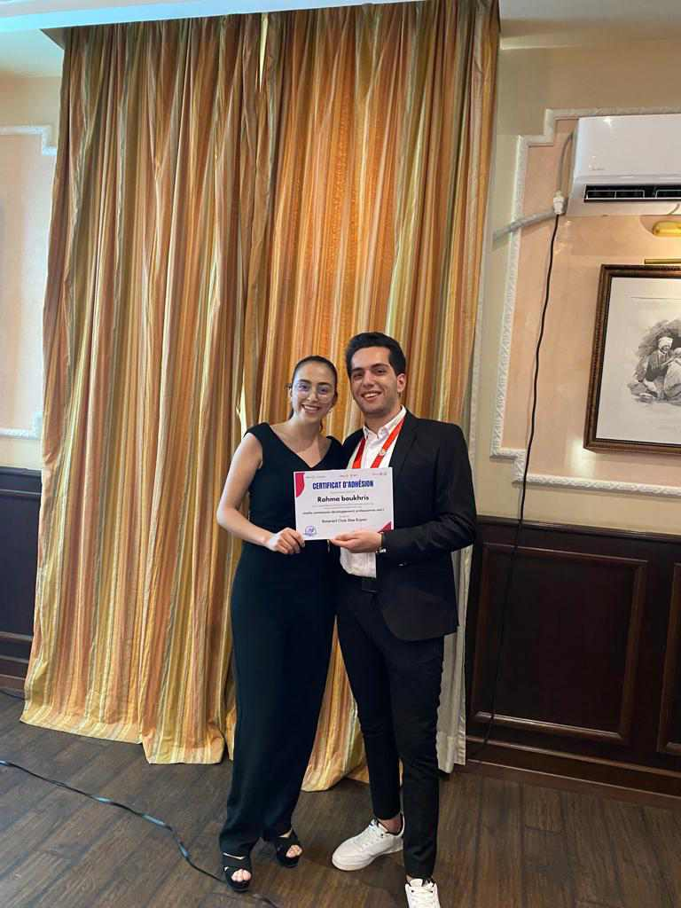
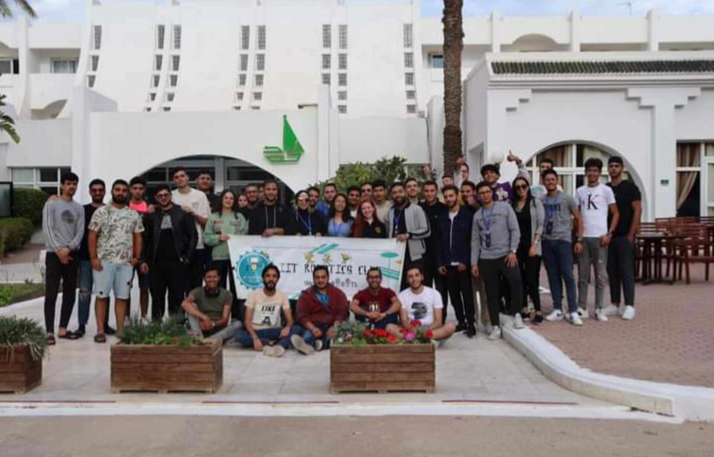
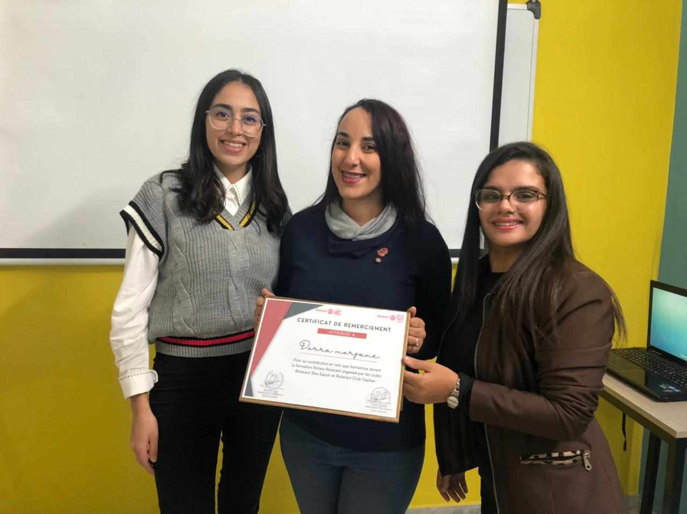
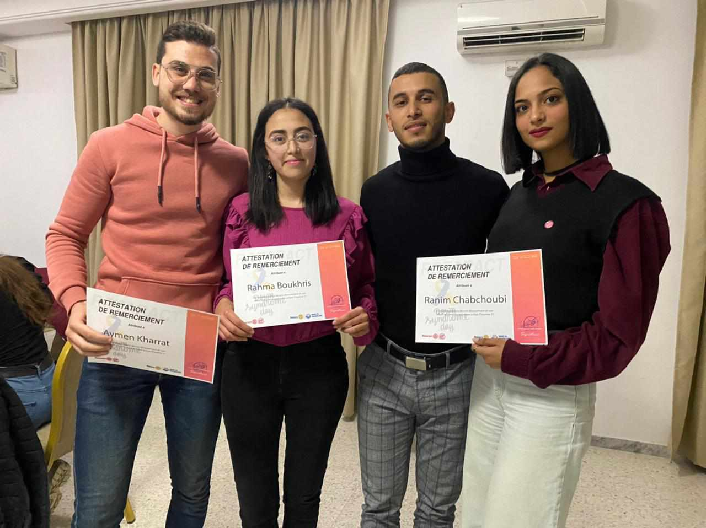
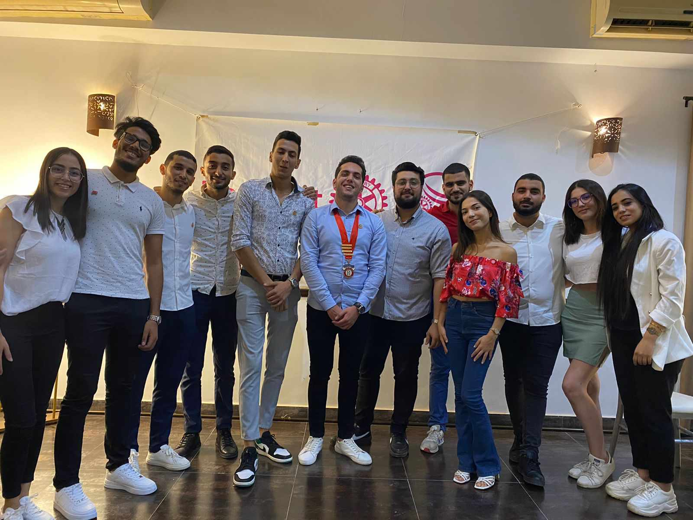
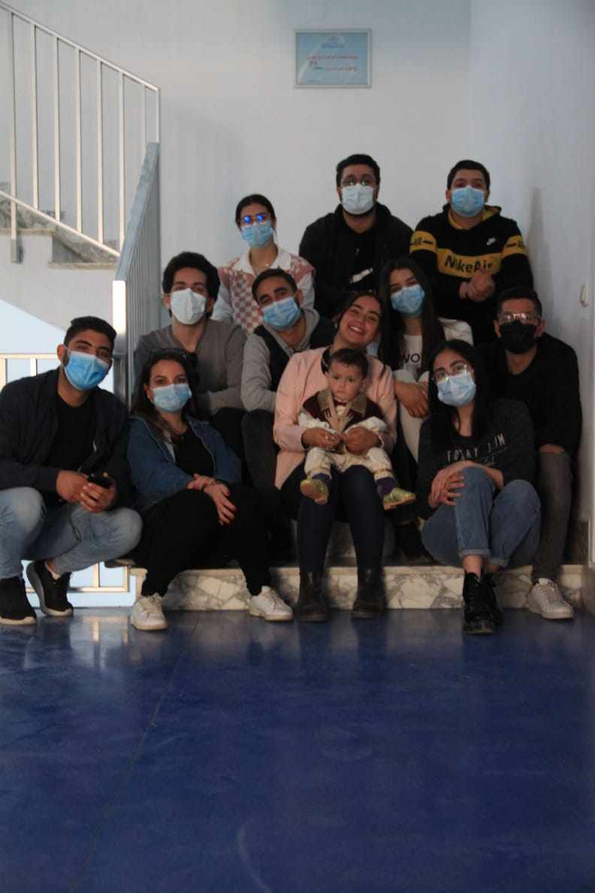

Organisations
Pendant mon parcours académique et professionnel, j'ai eu la chance de participer à diverses organisations, enrichissant ainsi mon expérience et mes compétences. Voici quelques-unes des organisations auxquelles j'ai été affilié :
- Microsoft Tech Club ISIM-Sfax: En tant que membre de ce club, j'ai eu l'opportunité de participer à des événements, des ateliers et des projets liés aux technologies de Microsoft.
- ISIMS Google Student Club: Mon implication dans ce club m'a permis de rester à jour sur les dernières technologies Google et de collaborer avec des étudiants partageant les mêmes intérêts.
- Club Rotaract Sfax Espoir: J'ai occupé le rôle de Professional Development Manager, contribuant ainsi au développement professionnel des membres du club tout en participant à des initiatives humanitaires.
- Association AISEC-Sfax: Mon engagement au sein de l'association AISEC-Sfax m'a donné l'occasion de développer mes compétences en leadership et en gestion de projets à travers des expériences professionnelles à l'échelle internationale.
- Adjunct Communication Manager in Club Robotique IIT: En tant qu'adjoint responsable de la communication dans le Club Robotique de l'IIT, j'ai contribué à la diffusion des informations sur les activités du club et à la promotion des projets robotiques.
Voici quelques collages d'images de mes expériences au sein de ces organisations :









